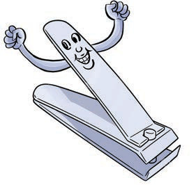
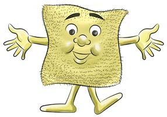
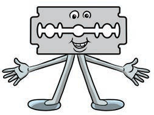
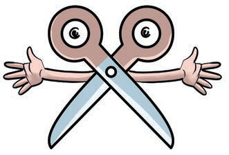
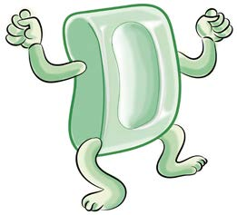

Shughuli ya 6
Fanya majigambo ya vifaa vya kusafishia mikono na kukata kucha kwa kutaja kazi zake.
Mimi ni maji, nitumie kusafisha mikono na kucha.
Mimi ni kikata kucha, sina urafiki na kucha ndefu nazikata.

Mimi ni brashi, nasugua mikono na kucha zako.
Mimi ni taulo, nakausha mikono yako.

Mimi ni wembe, sina urafiki na kucha ndefu nazikata.

Mimi ni mkasi, sina urafiki na kucha ndefu nazikata.

Mimi ni sabuni, natakasa mikono yako.
